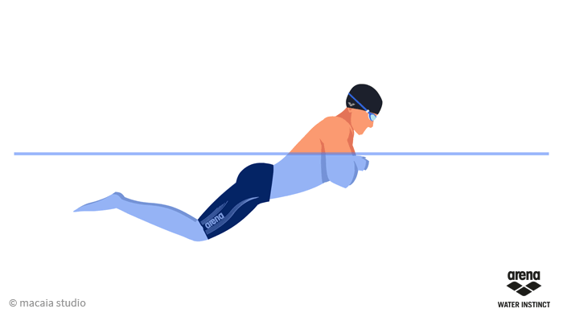

Kraul jest najszybszym spośród wszystkich stylów pływackich. Podczas pływania kraulem sylwetka przybiera najbardziej opływowy kształt, dzięki czemu przemieszczając się nie musimy tracić dodatkowej energii na stawianie oporu wodzie.v
Niestety, styl ten nie jest prosty w nauce – wymaga bardzo dokładnego opanowania techniki, w której największe znaczenie ma praca ramion i płaskie ułożenie ciała. Dużą trudność dla początkujących pływaków stanowi zanurzanie rąk w wodzie pod odpowiednim kątem. Sposób, w jaki ramię wchodzi pod taflę wody, a następnie wynurza się z niej decyduje o szybkości pływania (dla porównania – praca nóg odpowiada jedynie za 30% uzyskanej prędkości, pozostałe 70% zależy tylko od rąk).
Zsynchronizowanie ruchów ciała z oddechem też nie jest łatwym zadaniem, zwłaszcza, że styl wymaga częściowego chowania głowy pod wodą. U mniej doświadczonych pływaków brak kontaktu wzrokowego z otoczeniem może powodować spięcie mięśni i w efekcie trudności z utrzymaniem równowagi. Z tego powodu przed nauką kraula warto nauczyć się nurkować – w ten sposób poprawimy swój zmysł orientacji i oswoimy się z przebywaniem pod wodą.
Styl klasyczny (żabka)

Żabka to najpopularniejszy styl pływacki wśród amatorów. Niestety, sposób pływania najczęściej widywany na basenach nie ma zbyt wiele wspólnego z klasyczną wersją tego stylu.
W pływaniu stylem klasycznym wynurzamy i chowamy głowę pod wodę, a nie trzymamy ją stale zadartą do góry. Ruchy rąk nie są też tak zamaszyste – w momencie wynurzania się zbliżamy łokcie do tułowia, ale tylko do wysokości barków, co pozwala łatwiej wybić się nad powierzchnię wody, by zaczerpnąć powietrza.
Kolejny ruch – szybkie wyprostowanie ramion powoduje, że całe ciało ponownie się zanurza. Także praca nóg jest dosyć specyficzna – nie rozszerzamy kolan maksymalnie na boki, lecz robimy tylko delikatny rozkrok, podciągając stopy w kierunku pośladków i kierując je lekko ku górze, mniej na boki.
Żabka jest odpowiednim stylem dla tych, którzy poprzez pływanie chcą wzmocnić mięśnie całego ciała, ale tylko pod warunkiem, że jest to prawidłowe pływanie krytą żabką, nieobciążające odcinka szyjnego i lędźwiowego kręgosłupa. Żabka bardzo dobrze rozwija mięśnie klatki piersiowej, w mniejszym stopniu angażuje do pracy mięśnie grzbietu.
Unikaj żabki dyrektorskiej !!!
Żabka dyrektorska (zwana też krajoznawczą lub żabką obserwatorką) to błędny wariant klasycznej żabki, w którym głowa stale znajduje się nad powierzchnią wody.
Częste pływanie w ten sposób to prosta droga do nadwyrężenia kręgów szyjnych, a w konsekwencji powstania zwyrodnień w tej części kręgosłupa, które mogą mieć poważne następstwa (bóle karku, migreny, drętwienie rąk, zawroty głowy). Żabka dyrektorska nie wpływa też dobrze na odcinek lędźwiowy kręgosłupa powodując, że dolna część pleców pozostaje w nienaturalnym wygięciu i stałym napięciu.
Zamiast żabki dyrektorskiej lepiej wybrać styl grzbietowy - jest łatwy w nauce, a przy tym najzdrowszy dla kręgosłupa.
Styl grzbietowy (grzbiet)
Pływanie grzbietem najmniej nadwyręża plecy, a jednocześnie jest dobrym ćwiczeniem wzmacniającym cały gorset mięśniowy kręgosłupa. Z tego powodu technika ta polecana jest osobom z bólami pleców.
Osoba płynąca leży płasko na wodzie z twarzą zwróconą do góry, co ułatwia oddychanie. Główną siłą napędową są ramiona – pływak wymachuje nimi naprzemiennie, przenosząc nad taflą wody raz prawą, raz lewą rękę za głowę. Ramię, wchodząc do wody, powinno być maksymalnie wyprostowane w stawie łokciowym, natomiast pod wodą powinno ugiąć się pod kątem ok. 90-110 w kierunku zewnętrznym. Nogi również pracują naprzemiennie – w momencie ruchu w górę jedna noga lekko się ugina, natomiast druga, wykonująca ruch w dół, maksymalnie się prostuje (wskazany jest nawet przeprost). Stopy są obciągnięte, a głowa leży płasko na wodzie, dzięki czemu ciało przybiera hydrodynamiczny kształt.
Płynąc stylem grzbietowym trzeba pamiętać, aby stale utrzymywać biodra wypchnięte do góry (wówczas praca nóg staje się efektywniejsza). Tułów powinien lekko skręcać się przy wkładaniu ręki do wody – np. przy zanurzaniu prawego ramienia wskazana jest delikatna rotacja ciała w prawą stronę.
Styl motylkowy (delfin)
Styl motylkowy, nazywany też delfinem, wymaga perfekcyjnej techniki, dużej siły i koordynacji. Z tego powodu bardzo rzadko pływają nim amatorzy, natomiast dla zaawansowanych pływaków stanowi atrakcyjne wyzwanie.
W porównaniu do innych stylów, które znane są ludzkości od setek lat, motylka odkryto stosunkowo niedawno, bo w 1935 roku. Dokonał tego fizyk Volney Wilson, który wymyślił delfina na podstawie analizy ruchu ryb. Trzy lata później płynąc tym stylem wygrał kwalifikacje olimpijskie (motylek to po kraulu najszybszy styl pływacki), ale został zdyskwalifikowany ze względu na nieznaną wówczas technikę. Dopiero w 1956 roku rywalizacja w stylu motylkowym została uznana za oficjalną konkurencję Letnich Igrzysk Olimpijskich.
Nauka delfina zaczyna się od opanowania „falującego” ruchu ciała – polega on na tym, że głowa, klatka piersiowa, biodra i nogi poruszają się oddzielnie w górę i w dół (np. gdy głowa jest w dole, do góry idą biodra), ale wspólnie tworzą harmonijny ruch posuwający całe ciało do przodu. Dopiero potem doskonali się pracę rąk, nóg, umiejętność prawidłowego oddychania. Perfekcyjne opanowanie stylu motylkowego nie jest możliwe bez wskazówek doświadczonego instruktora. Sama nauka przebiega w kilku etapach – nie da się, tak jak np. w przypadku kraula, nauczyć motylka podczas dwóch, trzech sesji treningowych. Dlatego styl ten zarezerwowany jest dla doświadczonych, ambitnych pływaków.